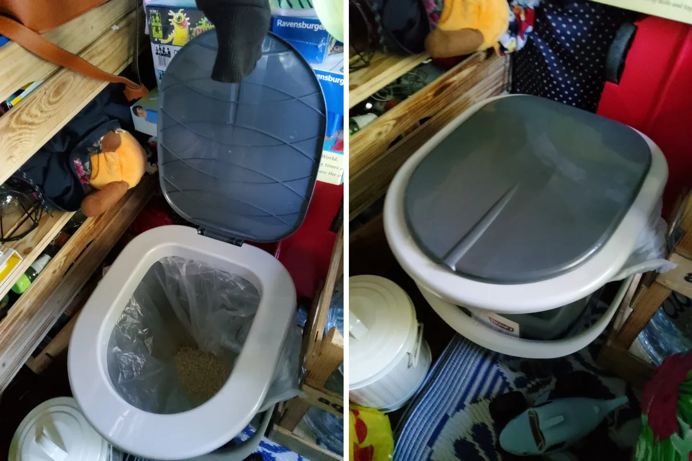

Moja pierwsza toaleta dla obozowicza — prosta, mała i wcale nie efektowna

Prawie nikt nie lubi mówić o toaletach dla obozowiczów — dopóki nie znajdziesz nigdzie toalety w nocy. Dla mnie było to jasne już na początku: nawet w najmniejszym T4 potrzebuję własnego rozwiązania. Nie luksusowe, nie zainstalowane na stałe, ale zawsze dostępne.
Moim pierwszym rozwiązaniem była prosta toaleta z wiadrem
Na zdjęciach widać moją pierwszą toaletę kempingową: kompaktowy pojemnik z siedziskiem i pokrywą. Do środka włożono worek wraz z materiałem chłonnym. Po użyciu wszystko można było zamknąć na klucz, a toaletę odłożyć na miejsce. Nie wymagał podłączenia do wody, chemikaliów ani stałej instalacji.
W moim tamtym zestawie to była właśnie zaleta. Udało mi się je wyjąć, przełożyć i wyczyścić. Gdy w autobusie liczy się każdy centymetr, mobilne rozwiązanie bywa czasem bardziej uczciwe i praktyczne niż rozbudowana toaleta, której nawet nie masz.
Co dobrze sprawdza się w codziennym życiu
- Był wystarczająco mały, by mieścić moją dostępną przestrzeń do przechowywania.
- Byłem niezależny nocą i na odległych boiskach.
- Nie było cieczy, która mogłaby wirować podczas jazdy.
- Z nową torbą szybko była gotowa do ponownego użycia.
I co mnie w tym drażniło
Oczywiście, to pierwsze rozwiązanie nie było doskonałe. Wszystko trafia do pojemnika, więc trzeba pracować bardzo czysto i regularnie to wyrzucać. Nawet podczas przechowywania nie chcę mieć otwartych lub źle zamkniętych toreb w salonie. Higiena, mycie rąk i stała rutyna to dla mnie absolutnie część tego procesu.
Później próbowałem innych systemów. Moja pierwsza sucha toaleta rozdzielająca była BOKS — i nie byłem zadowolony z tego konkretnego modelu. Zasada separacji wciąż jest dla mnie przydatna, ale to nie znaczy, że każdy produkt automatycznie pasuje do mojego codziennego życia. Moja prosta toaleta z wiadrem i BOXIO to dwa różne kamienie milowe w mojej historii toalety.
Do zobaczenia wkrótce i życzę udanej podróży,
twoja nazwa Tussy 💛